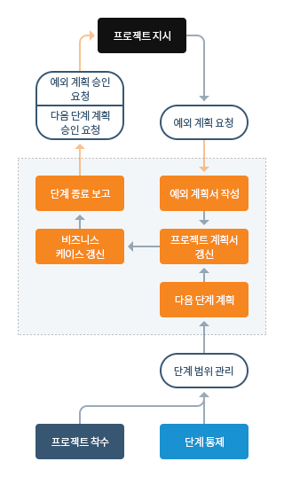

A. 목적
프로젝트 관리자가 충분한 정보를 제공할 수 있도록 프로젝트 보드를 제공함에 따라 현재 단계의 성공을 검토하여 다음 단계 계획을 승인하고, 업데이트된 프로젝트 계획을 검토하고, 지속적인 비즈니스 타당성 및 리스크의 수용 가능성을 확인한다.
B. 프로세스 구성도

C. 작업 가이드
| 업무 | 작업 또는 산출물 | 애자일의 작업 또는 산출물 |
|---|---|---|
| 다음 단계 계획 |
|
|
| 프로젝트 계획서 갱신 |
|
|
| 비즈니스케이스 갱신 |
|
|
| 단계 종료 보고 |
|
|
| 예외 계획서 작성 |
|
|
D. 애자일과 관련한 지침
- 가치 결정
- 단계, 릴리즈 계획
- 팀 성능 향상 가늠
- 애자일을 사용할 때 트랙 프로그래스
- 품질기준과 수용기준 정의
- 리스크와 이슈 관리
- 애자일과 관련된 리스크 가늠
- 애자일에 최적화된 요구와 산물 분해
- 워크샵
E. 관리 제품
- 9 단계 종료 보고서
- 10 예외 보고서
- 15 레슨 보고서
- 16 계획
- 18 제품 상태 설명서